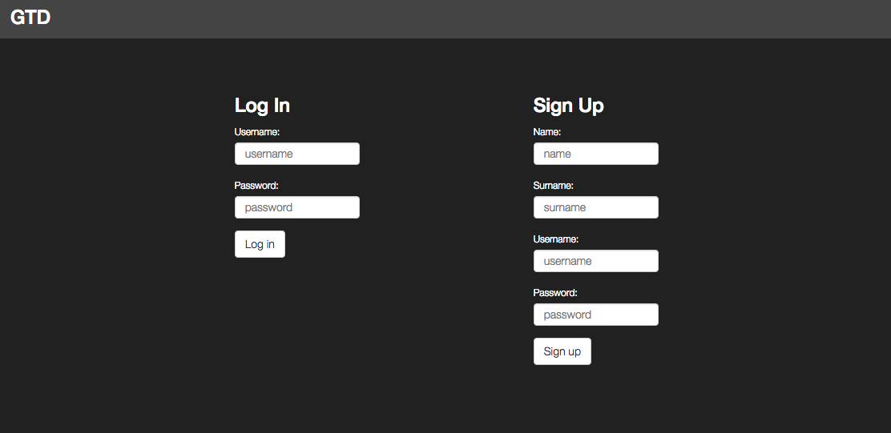
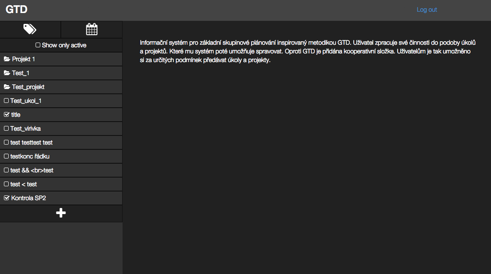
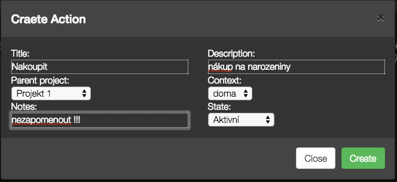
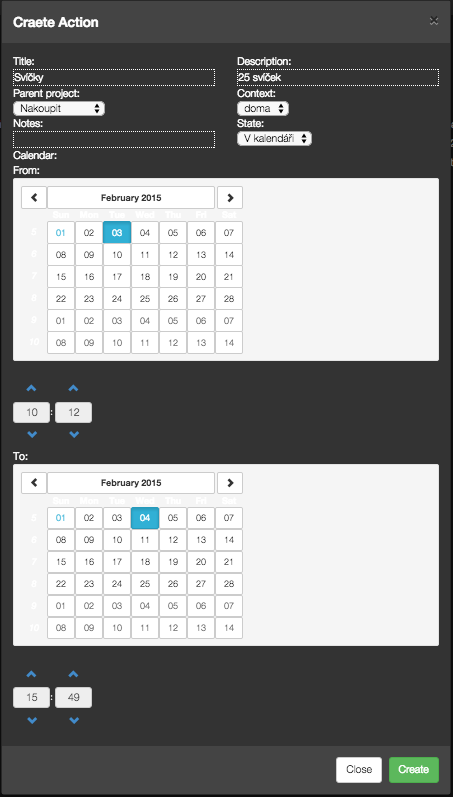
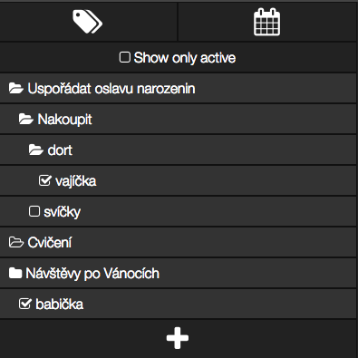
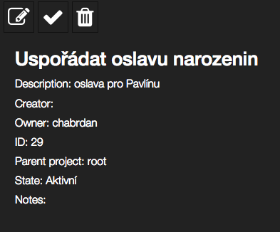
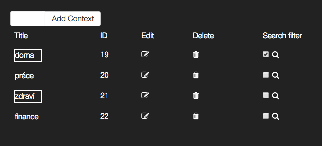
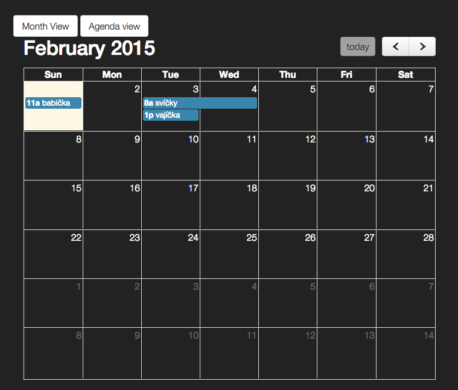
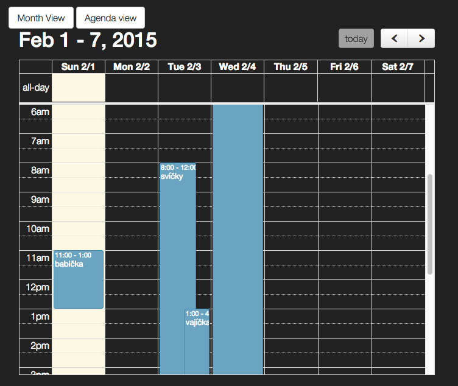

GTD je zkratka pro anglický výraz Getting Things Done, v překladu Dokončování věcí. Pomůže Vám udržet si přehled o všech činnostech, které potřebujete vykonat a tak zvýší Vaši efektivitu v plnění všech úkolů, ať už pracovních či volnočasových.
Při prvním vstupu na úvodní stránku se nám objeví přihlašovací formulář nalevo a registrační napravo. Při registraci není nutný další krok ke schválení účtu a proto jsme ihned po případné registraci přesměrování na úvodní stránku aplikace.
Potřeba je při registraci vyplnit pouze čtyří údaje. Pro heslo je pouze jedno pole a tak buďte opatrní s překlepy při jeho vyplňování :).

Po přihlášení Vás přivítá úvodní obrazovka aplikace s krátkým popisem k účelu aplikace. Nalevo je umístěno navigační menu, které podrobněji projdeme v dalších sekcích příručky. Vpravo nahoře ještě nalezneme odkaz, který nás z aplikace odhlásí a tak zamezí přístupu do aplikace jiným uživatelům stejného počítače.

Těžiště aplikace spočívá v rozdělení všech akcí na projekty a úkoly. Hlavní rozdíl mezi nimi je v konečnosti úkolu, ten tedy už nemůže mít další podúkoly.
Projekt má následující atributy:

Úkol má následující atributy:

Panel na levé straně slouží k hlavní navigaci v celé aplikaci.
Na horní straně najdeme dvě tlačítka pro přepnutí pohledů. První zleva nás přepne do pohledu pro správu kontextů, dále viz. Kontexty. Druhé tlačítko nás přepne do pohledu Kalendář, dále viz. Kalendář.
Dále následuje tlačítko pro filtrování úkolů a projektů, jeho zaškrtnutím se nám zobrazí pouze nedokončené úkoly a projekty. Je důležité být si vědom toho, že pokud projekt je projekt ve stavu dokončený, nezobrazí se nám se zapnutým filtrem ani žádný aktivní úkol nebo projekt, který ho má nastavený za rodiče.
Následuje hlavní stromová struktura projektů a úkolů. Pro zjednodušení navigace jsou používány různé ikony:
Na spodním okraji je tlačítko s ikonou plus, které slouží k vytváření nových úkolů a projektů.

Po kliknutí na libovolný projekt nebo úkol se nám v hlavní části obrazovky zobrazí podrobné informace o něm. Za povšimnutí stojí tři tlačítka v horní části. První nám umožní úkol/projekt editovat, druhé rychle označit za splněný a třetí smazat.

Kontexty umožňují přidat k úkolům a projektům značky, pro jednodušší navigaci a jejich zařazení. Jedna značka můžu být přiřazena k libovolnému množství úkolů nebo projektů. Na obrazovce kontextů můžeme nové kontexty vytvářet, editovat existující i mazat. Kontexty zde můžeme také aktivovat jako filtr (u ikony lupy na pravé straně) a v takovém případě se nám v navigačním stromě zobrazí jen úkoly a projekty s takovým kontextem.

Kalendář slouží k pohledu na úkoly, které mají stav v kalendáři. Můžeme takto jednoduše vidět, které úkoly je nezbytné splnit v určitém čase a až poté se věnovat zbývajícím. Můžeme se přepínat mezi přehledovým pohledem na celý měsíc a pohledem agenda, který zobrazí úkoly hodinu po hodině v rámci jednoho týdne.

